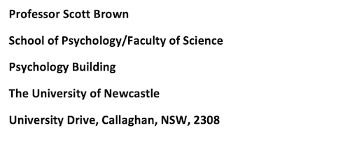

<!doctype html>
<html>

<head>
	<script src="libs/jquery-3.1.1.min.js"></script>
	<script src="jatos.js"></script>
	<script src="jspsych-6.3.0/jspsych.js"></script>
	<script src="jspsych-6.3.0/plugins/jspsych-html-button-response.js"></script> 
	<script src="jspsych-6.3.0/plugins/jspsych-call-function.js"></script>    
      <link href="jspsych-6.3.0/css/jspsych.css" rel="stylesheet" type="text/css"></link>
	<link rel="stylesheet" href="css/pure-release-0.6.0/pure-min.css">
	<link rel="stylesheet" href="css/sort.css">
</head>

<body>
</body>

<script>
	var online = true;
	var username;
	var timeline = [];
	var currentStudy;

	var consent = {
			type: "html-button-response",
			choices: ['I consent'],
			post_trial_gap: 1000,
			stimulus: 			"<div style='float: centre;'>" +
			"<p>Information Statement and Consent Page for the Research Project: Understanding basic cognition by categorising simple perceptual stimuli (Online Marketplaces) </p><p> Document Version 1; dated 17/07/2019</p>"+
			"<p>You are invited to participate in the research project identified above which is being conducted by Professor Scott Brown, Associate Professor Ami Eidels, Dr Guy Hawkins, and Dr Emily Freeman from the School of Psychology at the University of Newcastle. The results of this research may be used in Honours or PhD theses of students supervised by the above researchers.</p>"+
			"<p><b>Why is the research being done?</b></p>"+
			"<p>The purpose of the research is to study the cognitive processes people use to make simple and complex decisions.</p>"+
			"<p><b>Who can participate in the research?</b></p>"+
			"<p>Anyone who is over the age of 18 is eligible to participate in this study.</p>"+
			"<p><b>What choice do you have?</b></p>"+
			"<p>Participation in this research is entirely your choice. Only those people who give their informed consent will be included in the project. Whether or not you decide to participate, your decision will not disadvantage you. If you do decide to participate, you may withdraw from the project at any time without giving a reason and have the option of withdrawing any data which identifies you, up until the completion of the sessions.</p>"+
			"<p><b>What would you be asked to do?</b></p>"+
			"<p>If you agree to participate, participation will be online at a time and place of your discretion. During the session you will be presented with simple stimuli on screen, like letters, colours, simple geometric shapes or hypothetical products, and you will be asked questions about these stimuli. You might also be asked to complete a survey of demographic information, or questions relating to the experimental task. You will not be asked to provide identifying or sensitive information.</p>"+
			"<p>The researcher will provide all the details about the experimental task you will undertake prior to the commencement of the experiment.</p>"+
			"<p><b>How much time will it take?</b></p>"+
			"<p>You will be asked to complete one session of up to one hour. For your participation, you will be reimbursed as per the study advertisement.</p>"+
			"<p><b>What are the risks and benefits of participating?</b></p>"+
			"<p>By participating in this experiment, we believe you may gain a greater understanding of what is involved in psychological research. We foresee no risk to you in participating in this study.</p>"+
			"<p><b>How will your privacy be protected?</b></p>"+
			"<p>Participating in the study is voluntary. You may withdraw your consent at any time, for any reason, before or during the study simply clicking the 'close' or 'back' buttons on your browser. No data will be recorded should you choose to withdraw, and no reason for withdrawal will be asked. During the experiment, cookies will never be stored on your computer, and your camera and microphone will never be accessed.</p>"+
			"<p>Should you choose to participate, all responses will be confidential and it will not be possible to identify you from your answers. Your de-identified responses will be stored on a secure server, which will only be accessible to members of the research team. The research data will be stored on password protected computers and servers for a period of at least five years. De-identified data may also be shared with other international researchers and made available to the research community via open data repositories.</p>"+
			"<p><b>How will the information collected be used?</b></p>"+
			"<p>The results of this research may be reported at professional conferences and in published articles in professional and scientific journals, student research reports and presentations, and online blogs and websites. Any results arising from this research will be reported as a summary of all responses: individual participants will not be identified in any reports from the project. The results of this study and related studies will be available by 2021 - you can obtain a copy by emailing the research team. </p>"+
			"<p><b>What do you need to do to participate?</b></p>"+
			"<p>Thank you for the time you have taken to consider this invitation. Please read this Information Statement and be sure you understand its contents before you consent to participate. Please save a copy of this information page. If there is anything you do not understand, or you have questions, please contact Professor Scott Brown, School of Psychology, Faculty of Science, The University of Newcastle, using the phone number or email address above. </p>"+
			"<p> If you would like to participate, you may consent to participating in this research by reading the consent statement that follows, then clicking the 'I consent' button at the bottom of the page. You can choose not to consent by clicking either the 'back' or 'close window' buttons on your browser.</p>"+
			"<p><b>Statement of Consent:</b></p>"+
			"<p>I agree to participate in the above research project and give my consent freely. I understand that the project will be conducted as described in the Information Statement, a copy of which I have retained. I understand I can withdraw from the project at any time and do not have to give any reason for withdrawing. I consent to:</p>"+
			"<p> - 	 One online session of up to one hour duration, during which I will answer questions about simple stimuli displayed on a computer monitor, such as letters, colours, simple geometric shapes or hypothetical products. I may also be asked to complete a survey of demographic information, or questions relating to the experimental task. I understand that I will not be asked to provide identifying or sensitive information. I understand that my personal information will remain confidential to the researchers. I have had the opportunity to have questions answered to my satisfaction. </p>"+
			"<p><b>Complaints about this research</b></p>"+
			"<p>This project has been approved by the University’s Human Research Ethics Committee, Approval No. H-2019-0321.</p>"+
			"<p>Should you have concerns about your rights as a participant in this research, or you have a complaint about the manner in which the research is conducted, it may be given to the researcher, or, if an independent person is preferred, to the Human Research Ethics Officer, Research Services, NIER Precinct, The University of Newcastle, University Drive, Callaghan NSW 2308, Australia, telephone (02) 4921 6333, email Human-Ethics@newcastle.edu.au. </p>"+
			"<div style='float: centre;'>",
			margin_vertical: "50px"
			
		};
		timeline.push(consent);


	 
	var trial = {	
		type: 'call-function',
    	async: true,
		func: function () {
				function shuffle(array) {
 			 var currentIndex = array.length, temporaryValue, randomIndex;

 			 // While there remain elements to shuffle...
 			 while (0 !== currentIndex) {

    		// Pick a remaining element...
    		randomIndex = Math.floor(Math.random() * currentIndex);
    		currentIndex -= 1;

    		// And swap it with the current element.
    		temporaryValue = array[currentIndex];
    		array[currentIndex] = array[randomIndex];
    		array[randomIndex] = temporaryValue;
  		}
  	return array;
	}
		var arr = [2, 3, 4];
		shuffle(arr);
		var x = arr[0];
		var y = arr[1];
		var z = arr[2];
		arr.push(5);
		jatos.studySessionData["currentTask"] = 0;
		jatos.studySessionData["taskOrder"] = arr;
		jatos.studySessionData["username"] = username;
		jatos.studySessionData["study"] = currentStudy;
		jatos.studySessionData["online"] = online;
		jatos.studySessionData["task_ID"] = task_ID;

		jatos.startComponentByPos(x);
	}
	};
	timeline.push(trial);
	
	
	jatos.onLoad(function () {
		jsPsych.init({
 			timeline: timeline,
			})
 			
		if (online == true){
			username = jatos.urlQueryParameters.PROLIFIC_PID;
			currentStudy = jatos.urlQueryParameters.STUDY_ID;
			task_ID = jatos.urlQueryParameters.TASK_ID;
		}else{
			
		}
	});
	
</script>

</html>